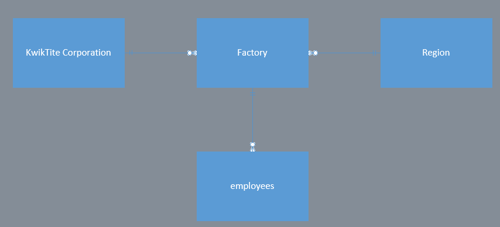

What is a database?
A database is any collection of data or information designed for storage and retrieval by a computer. Some may look at a database as a spreadsheet however it is not just one single spreadsheet but multiple with relationships drawn between them.
And what is one we may have used
Common databases could be anything, every company that stores information requires a database, for logging in, sending messages (if you didn't know, social media keeps every message you send, deleted or not) and even purchases on places like Amazon.
Discuss and define each of the following terms
-
Data
- Data in the context of databases refers to all the single items that are stored in a database. This information has been translated into a form that is efficient for movement or processing
-
Field
- A field is part of a record and contains a single piece of data for the subject of the record.
-
Record
- Database is stored in records; a record is composed of fields and contains all the data about one person or thing.
-
File
- You can think of a traditional database as an electronic filing system, generally files are contained audio/video, graphic or text information dictated by the program that created it and can only be read or used by the same program.
What is a DBMS?
A database management system.
And its functions?
A DBMS is system software for creating and managing databases. The DBMS provides users and programmers with a systematic way to create, retrieve, update and manage data.
Explain why database design is important?
Database design is important for making it as fluid and compact as possible, without wasting company resources on space on the server for overly verbose data.
If you created your database as scalable, then should the amount of data required to input increase or decrease, the size of the database will scale to match.
What is the difference between Data, Information, and a Database?
Data, is information that is yet to be organized.
Information, is data parsed into manageable bits, for humans to read and check.
A Database, is a system to store a collection of data
How many records does the table contain and how many fields are there per record?
Fields-5 (columns or attributes)
Records-7 (rows)
Problems would you encounter if you wanted to produce a listing by city?
You would run into one major problem, the formatting in the “manager_address” is not properly written.
How would you solve this problem by altering the structure above?
You could delete the full address and only leave the city in the “manager_address” or create a new field named “city”.
If you wanted to produce a listing of the table contents by last name, area code, city, state, or zip code how would you alter the table structure above?
In order to produce a listing of table contents by search criteria given above you would need to separate the last name, area code, city, state and zip code all in there respective fields.
What data redundancies do you detect, and how could these redundancies lead to anomalies?
We have a few redundancies here, we have a couple people with more than 1 bid. Should someones name be misspelt, then a few errors could occur such as later on, such as the manager not having both projects

Identify and discuss the serious data redundancy problems exhibited by the table structure.
Firstly, it should be manager name not employee name. Employees should have their own tables for projects and everything after project name should be in its own separate employee table.
Looking at the EMP_NAME and EMP_PHONE contents in the figure above, what change(s) would you recommend?
EMP_NAME and EMP_PHONE should be in an employee table.
Identify and discuss the serious data redundancy problems exhibited by the table structure shown.
The BUILDING_CODE Is repeated due to the building having multiple teachers in it at a time. The ROOM_CODE also has different people in them at different times, Teachers will teach multiple times so they show up multiple times, Risell also doesn't have a middle name, and multiple initial's are repeated, as well as the times being repeated.
Given the table structure shown in the figure above, what problem(s) might you encounter if you deleted building KOM?
you would lose more information then intended, and would lose teachers.
Describe (write out) the relationship depicted in the ERD shown below.
Many classes are taught by one teacher, one teacher advises many students.
Convert the ERD in problem 9 into a crow’s foot model.

Describe the relationship shown in the ERD above.
One Employee writes multiple Invoice, Multiple invoices request payments from a customer
Create a Crow's Foot ERD for each of the following descriptions. (Note: The word "many" merely means "more than one" in the database-modeling environment.
Each of the Mega Co Corporation’s division is composed of many departments. Each of those departments has many employees assigned to it, but each employee works for only one department. One employee manages each department, and each of those managers can manage only one department at a time.

During some period of time, a customer can rent many videotapesfrom BigVid store. Each of the BigVid’s videotapes can be rented to many customers during that period of time

An airliner can be assigned to fly many flights, but each flight is flown by only one airliner.
The KwikTite Corporation operates many factories. Each factory is located in a region. Each region can be “home” to many of KwikTite’s factories. Each factory employs many employees, but each of those employees is employed by only one factory.
